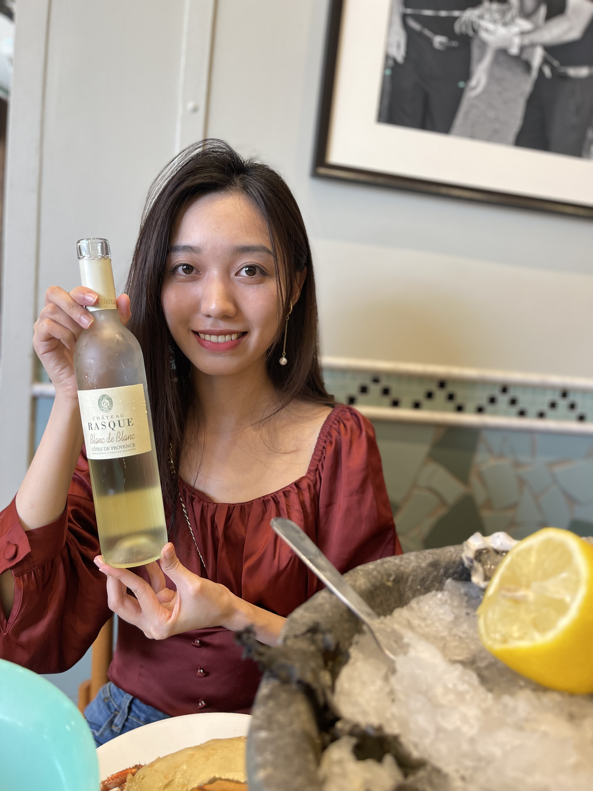
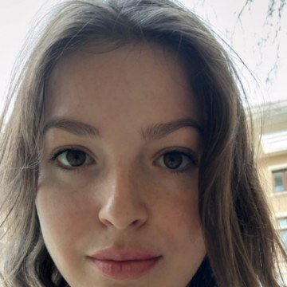

精选影像
安静的光，真实的关系
首页先让客户感受到 Fiona 的画面气质：自然光下的亲密、不过度摆拍的互动，以及人在一座城市或一段旅程里的真实状态。
查看完整作品页个人旅行 / 婚礼 / 私奔 / 情侣 / 订婚
Fiona Tang Studio 常驻尼斯，拍摄南法个人旅行肖像、婚礼、私奔、情侣、求婚与订婚影像。你不需要很会面对镜头，Fiona 会在自然光和真实节奏里，引导你留下放松、亲密、有温度的画面。


婚礼、私奔、情侣与旅行肖像的第一眼感觉：自然光、真实互动和南法地点感。
精选影像
首页先让客户感受到 Fiona 的画面气质：自然光下的亲密、不过度摆拍的互动，以及人在一座城市或一段旅程里的真实状态。
查看完整作品页关于 Fiona
Fiona 熟悉蔚蓝海岸的光线、路线和节奏。你不需要很会面对镜头，她会用清楚、自然的方式引导你，让照片保留你本来的状态。
了解 Fiona婚礼 / 私奔
无论是正式婚礼，还是只有两个人的小型仪式，重点都不是把场面做大，而是把誓言、拥抱、亲友和当天的真实节奏留下来。
了解婚礼拍摄情侣 / 订婚 / 求婚
适合来南法旅行、准备求婚或订婚纪念的人。路线、时间和光线可以提前规划，拍摄现场保留轻松互动，不需要硬摆。
了解情侣与订婚


精选影像
把解释留给服务模块，把第一眼留给照片、光线和情绪。
拍摄服务
不确定自己属于哪一种也没关系。你可以先从日期、地点和想留下的感觉开始说起。无论是一个人的旅行肖像，还是婚礼、私奔、情侣旅行、求婚或订婚拍摄，Fiona 都会帮你判断适合的方式。
适合独自来南法旅行、想为自己留下一组自然照片，或需要轻量个人形象照的人。拍摄可以像散步一样轻松，也可以根据服装、地点和用途做得更完整。
了解个人拍摄适合旅行中的情侣、准备求婚或订婚纪念的人，也适合想在南法留下一组更自然肖像的人。可以轻松一点，也可以带一点仪式感。
了解情侣与订婚适合想把仪式留给自己、在南法选择一个更亲密地点的两个人。重点不是规模，而是光线、路线、誓言和你们当天真实的状态。
了解私奔拍摄适合有正式仪式、亲友参与或完整婚礼日安排的新人。Fiona 会关注现场节奏、亲密关系、重要细节和那些自然发生的瞬间。
了解婚礼拍摄你好，我是 Fiona Tang
我常驻尼斯，拍摄蔚蓝海岸、摩纳哥和普罗旺斯一带的个人旅行、情侣、求婚和小型庆祝。
我的拍摄方式偏柔和、自然、带一点胶片感。我更在意真实关系里的光线、距离和情绪，而不是让你变成另一个人。
很多客人一开始都不习惯面对镜头，这完全没关系。我会给你清楚、自然的引导，帮你找到合适的光线、地点和动作。
无论你是独自来南法旅行，和爱人在海边庆祝，还是计划一场安静的求婚，我都希望帮你把那个时刻留下来。
Andjela Todorović
She is highly attentive, has a great eye for details and delivers photos quickly. I would highly recommend her for couple and engagement shots if you want your story to look like a fairytale.

Aurelie Grihangne
I had the chance to work with Fiona for a photoshoot for my content creator business and I was amazed by her professionalism. The atmosphere she was able to create and the quality of the photos were remarkable — I was extremely pleased with the aesthetics of the pictures.
咨询拍摄
把日期、地点、拍摄类型、预算范围和你喜欢的影像感觉发过来，Fiona 再判断是否适合、如何报价。
第一阶段隐藏。未来用于地点指南、婚礼策划相关内容和搜索内容资产。